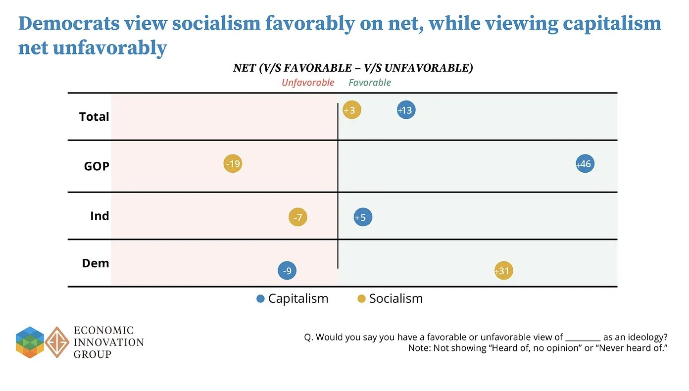
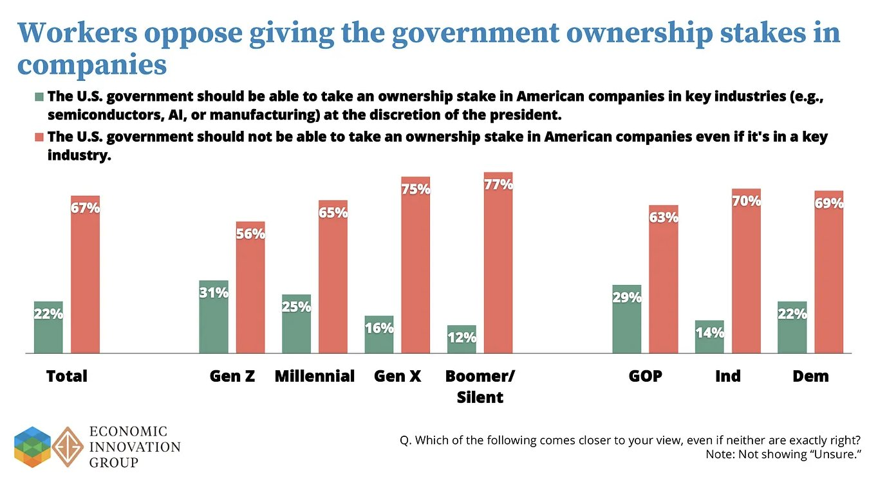
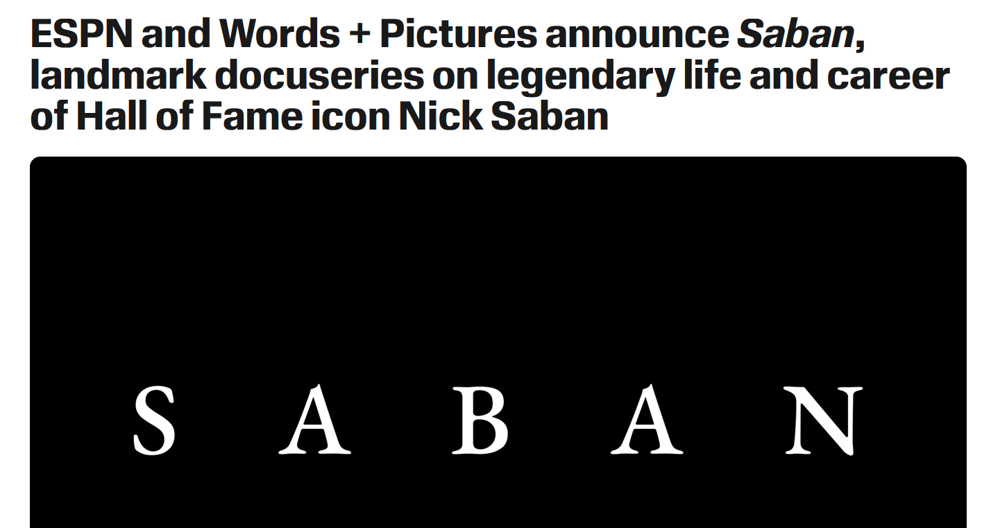

WEEKLY REMINDERS/ANNOUNCEMENTS – Eco 238, Week 8
Topics and Readings This Week: We’ll be the Valuation Section of the course and will be discussing how to break up valuations across market and non-market values, the different components of non-market valuation, a further examination of risk analysis, and then moving on to illustrate different methods on the ground to elicit non-market valuation. Finally, we will discuss the meaning of applying dollar valuations to human lives themselves.
Weekly Assignment: Build us a “Tall Tale” podcast. We have also posted your Week 9 work, worth getting a head start on.
TA Office Hours and Info
Look for an announcement from our Head TA Jingyao Wang Wu for an update on Office Hours and discussion session opportunities.
My Availability
Check tiny.cc/RizzoHours for up to date information. Stop by to talk about your projects!
I will be away from electronics from Friday afternoon through Sunday night.
This Week at Rochester
https://rochesterrizzo.github.io/Rizzo-Hours/this-week-at-rochester/
STAFF PICKS
Friday · Ideas worth building The Heist: AI Hackathon Kickoff
2–4 PM · Schlegel 107. Teams build ideas at the intersection of AI, sustainability, MedTech and entrepreneurship.
Friday · Arts & ideas Musical Wonderlands
5 PM · Humanities Center. Can a touch screen make music-making effortless, and what gets lost?
Saturday · Home sports Three swimming matchups at noon
Canisius faces both Rochester squads, Siena faces the women; Speegle-Wilbraham Aquatics Center.
Monday · New music OSSIA + Eastman Wind Orchestra
Two FREE 7:30 PM concerts, in Kilbourn and Kodak Hall respectively.
Tuesday · The wonderfully obsolete Obsolete Press: analog printmaking
Noon pop-up and 5:30 PM archive conversation; zines, mimeographs and discarded technologies.
Wednesday · AI & energy AI and the Reinvention of Energy
12:30 PM · Wegmans 1400. Accenture's global energy lead on an industry being remade.
Wednesday · AI & humanities The Humanistic Epistemology of AI
5 PM · Humanities Center. Laurent Dubreuil interrogates the linguistic assumptions beneath LLMs
Upcoming Special Events
The Politics and Markets Project, Hosted by Professor David Primo
Title: Topic TBD (this will be a moderated panel discussion)
Date: Wednesday, November 4th
Time: 7:30pm to 8:30pm
Location: Wegmans Hall, 1400.
More Info on the PMP: Follow on Instagram
Department of Economics PIZZA and PAYOFFS Special Event

Title: Pizza and Payoffs: Everything you wanted to know about the Econ major — courses, careers, and what you can actually do with an economics degree.
Who: Professor Lisa Kahn and special guest Chris Nosko
Date: Monday, November 9
Time: 5:30pm to 7:00pm
Location: TBD
More Info: Chris Nosko is the head economist for Amazon! Very short department information session and lots of time for Q&A and discussions with Nosko and our department faculty.
Department of Economics Annual GILBERT LECTURE (walk around Harkness to see a little bit of its history)*

Title: TBD
Who: Robert Staiger, Chief Economist of the World Trade Organization
Date: mid-November
Time: TBD
Location: TBD
More Info: Learn more about Professor Staiger here.
THE GILBERT LECTURE
The Donald W. Gilbert Memorial Lecture is one of the great traditions of the University of Rochester Department of Economics.
Donald W. Gilbert was deeply tied to both the University and the city of Rochester. A Rochester native and East High graduate, he entered the University in 1917, graduated in 1921, earned a master’s degree in economics at Rochester, studied at Harvard, and then spent nearly his entire professional life at UR. He rose from instructor to professor and chair of Economics, became dean of graduate studies, and in 1948 became the University of Rochester’s first provost. During his leadership of graduate education, Rochester was admitted in 1941 to the Association of American Universities, then a very small group of the leading research universities in the United States and Canada.
Gilbert also believed strongly that economics should reach beyond the classroom and seminar room. He helped create the University of Rochester Management Clinics, which connected the University with dozens of Rochester businesses and industrial organizations, and he was heavily involved in civic and public-policy life. When he died in 1957, at only 57, President Cornelis de Kiewiet described him as one of the University’s most important links to the Rochester community.
After Gilbert’s death, his friends, colleagues, alumni, and former students established a memorial lecture in his honor. The goal was entirely consistent with Gilbert’s career: bring serious economics to bear on the difficult practical and policy problems of the day.
The first Gilbert Lecture was delivered on April 30, 1959, by the great public-finance economist Richard Musgrave, speaking on the federal budget and the American economy. What followed was an extraordinary run of speakers. In the first decade alone, the series included Paul Samuelson, Milton Friedman, Kenneth Boulding, Wassily Leontief, Robert Solow, and James Tobin.
Over the following decades, Gilbert lecturers have included many of the most important economists of the modern era: Kenneth Arrow, Arthur Lewis, George Stigler, Franco Modigliani, Gary Becker, Robert Fogel, Thomas Schelling, James Heckman, Vernon Smith, Peter Diamond, Richard Thaler, Michael Kremer, Paul Romer, and many others.
Remarkably, 18 Gilbert lecturers later received the Nobel Prize in Economics.
Just as important as the names are the subjects they came to Rochester to discuss: unemployment, inflation, economic growth, population, pollution, regulation, Social Security, technological change, development, financial crises, education, health care, inequality, international trade, and the institutions that shape economic life.
The Gilbert Lecture is not simply a celebration of famous economists. It promotes the particular idea about that Rochester economics takes the tools of the discipline and aims them at the world outside the classroom.
One final Rochester detail: Gilbert Hall is named for the same Donald W. Gilbert, another reminder of how significant he was to the development of the University.
SOME THINGS THAT CAPTURED OUR ATTENTION
Ding Dong, The Cost of Climate Change Fell Again: “Coral can fully recover from bleaching after brief contact with healthy coral clones, according to lab-controlled study, and do so rapidly.”
"New York’s goal is to have 6 gigawatts of energy storage online by 2030, but the reality of that is looking grim. As of Aug. 31, the state’s total storage capacity was about 576 megawatts." More on ADK towns rejection of batteries.
Property Rights Solve Problems: French Feces Edition
What’s Better Than the US Buying Greenland? Getting it for free!
So, to sum up:
The US secured a permanent military foothold that even an independent Greenland would inherit whether it likes it or not
The US now has veto power over any non-NATO military presence in Greenland, and over who can invest in its strategic infrastructure and resources (beyond NATO and the EU)
Denmark signed away its say over the principle of new US bases, with only the right to discuss the "implementation details"
Danish authorities no longer set the rules for US military movement across the island
And all of it is now justified by the defense of "the American continent"
I don't know in which universe this even remotely "recognizes the sovereignty and territorial integrity of the Kingdom and the Greenlandic people's right to self-determination," as Danish PM Mette Frederiksen put it (stm.dk/en/press/press…).
Yes, the preamble of the text cynically "reaffirms" Danish sovereignty but, in my book, when you let a foreign country put bases on your soil, move its troops without following your rules and veto who else can come in, in perpetuity, after it spent two years threatening to take you by force, the word for that is anything but "recognized sovereignty
The Iron Law of Climate Change, Death of Small Cars Edition: The Death of Small Cars: The death of the small car in the US. Between 1981 and 2025 the average weight of new cars rose from 3200 pounds to over 4400 pounds, and the fraction of new cars that were small passenger cars fell from 80% in 1975 to 34% in 2025. “As of 2026, the traditional small car market has shrunk to a handful of remaining options like the Nissan Sentra and the Kia K4. Every other manufacturer has either killed off small-sized models or upgraded them to midsized cars and crossover utility vehicles (CUVs).” [World of Systems]
(they killed fun cars and stick shift cars too ... I STILL maintain that driving a stick is not only more fun, but in an age of phones and other distractions, is ... SAFER)
You Must Die … to prevent the planet from killing you first. “For 40 years, King Cove residents have been campaigning for a basic piece of lifesaving infrastructure. Their efforts have been blocked by faraway activists.”
How Do Firms Clean Up Under a Pollution Permit System? “Using 17 years of the EU Emissions Trading System, the paper asks how higher pollution/permit prices actually reduce aggregate emissions. The striking result is that short-run within-firm input substitution is quite rigid; nearly all of the short-run emissions response instead comes from reallocation of production away from dirtier firms and toward cleaner firms. Higher permit prices also induce clean-technology adoption over the following five years. In their model, doubling the permit price cuts aggregate emissions 23% in the short run and 31% in the longer run, while aggregate output falls only 4% initially and 2.5% longer-run. This is a particularly useful general-equilibrium lesson: looking only at how an individual regulated firm changes its technology can miss the main mechanism through which pollution pricing works.”
More Data Center Mirth, Guess the libertarian ideologues at Columbia don't understand Adam Smith and basic supply and demand either: The nearly 50% surge in power costs for residential electricity from 2016 to 2026: "were driven primarily by investments in distribution and transmission networks, fuel volatility, routine maintenance, and policy mandates rather than load growth.”
The Most Useful AI Chatbot Ever Invented: Try it out NOW!
Release the Hounds! Is Geothermal Already at Grid Scale Capability? “The Houston-based company wrapped up a full-scale, 30-day well test at its Project Red site in northern Nevada, which was able to generate 3.5 megawatts of electricity”
Re”nothing”ables? What energy transition? Energy consumption rose by 1% last year, but renewables did nothing to lower fossil fuel, which accounted for 82% of global energy supply according to the Statistical Review of World Energy report. And this is despite the largest increase in new wind and solar capacity construction—a combined 266 gigawatts. Solar grew by 25%, wind by 13.5%. Together, non-hydro renewables met 84% of electricity demand growth last year. And yet global emissions still grew 0.8%.
If the place is already an exclusion zone, why not build 100s of Gigawatts of nuclear power there? Chernobyl Wind is everything you need to know about how serious we are about energy transitions.
BASED! Our biotech future just got better again.
How come Rochester did not make this list?
Japan’s Population Lost THREE Rochesters. Last Year Alone. The drops will be larger in China.
WINTERCOW’S MOOING: Crabpotism and Antisocial Punishment. Creepy voice podcast here; Need some time to make it sound better, suggestions welcome.
CHART(S) OF THE WEEK: An amusing result of this new survey is that Democratic-voting workers had a startlingly high net-favorable view of Socialism while also saying that taxes were too high and they oppose government ownership stakes in companies.



PHOTO OF THE WEEK: Peak Capitalism, episode 299577591

VIDEO/DOCUMENTARY/BOOK/CARTOON, ETC OF THE WEEK: SABAN

* * *QUOTE * * *
Mediocre People Don’t Like High Achievers. And High Achievers Don’t Like Mediocre People
- Alabama football coaching legend Nick Saban